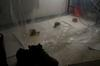
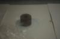
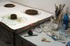
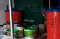
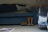
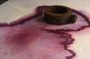
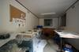
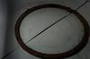
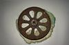

Making the Work
The Artist’s Response
The regular journey to spend time in the area has provided the first experience of working as an artist in a particular location over a prolonged period of time. There have been few distractions from this opportunity to experiment and explore in and around the environment, and to consider how this interacts with my work. Most of the work has been produced on location at Killhope - much of it in ‘the Portakabin’.









{kind=link}
{kind=link}
{kind=link}
{kind=link}
{kind=link}
{kind=link}
{kind=link}
{kind=link}
{kind=link}
The concept of time, of cycles and rhythms became a theme. The area is rich in geological and human history and integrating time into making the work soon became both intention and the inevitable consequence of a parallel concern with fluidity and my pattern of visits. The practicalities of these processes began to dictate strategies whereby images in progress were set up on site and left to develop in my absence. The damp cold weather slowed drying and extended the time available for the various materials to disport themselves and express their character, their individuality being given full rein. Rust developed, pigments separated and materials interacted, processes which seemed to echo the formation of minerals upon which the mining economy was based.
My working day often began by watching the huge water wheel being set in motion. The wheel drives the machinery in the Jigger House that once sorted the heavy crushed lead ore from lighter unwanted material. The sound of the water changing pitch and the gentle yet uncompromising movement of this graceful old machine created a rhythm which ran through my day. A cycle emerged which seemed to forge a link between the use of wheels and water in the traditional working practices of the mine and the very different work which I did there each day.
Jane Foale, March 2008
The Material’s Response
Most of the works were made by placing rusty, dirt-covered cast iron objects (tools and other pieces of equipment or machinery) into pools of diluted watercolour paint on paper. They were then left to dry out in the portakabin between my visits.
The water leaches salts out of the iron and dirt, these dissolve into the water altering its acidity. This can affect the composition and colour of the paint. Contact with the water and air speeds up the oxidisation (rusting) of the iron, this in turn speeds up leaching and a cycle is initiated whereby the process is intensified. Once the water has evaporated, the process comes to a halt and the works become stable, or ‘finished’.
The iron objects act like super-concentrated iron ore and the water acts like ground water which might flow through layers of iron ore and downwards to alter minerals in the rocks beneath.
With acknowledgements to John Say.